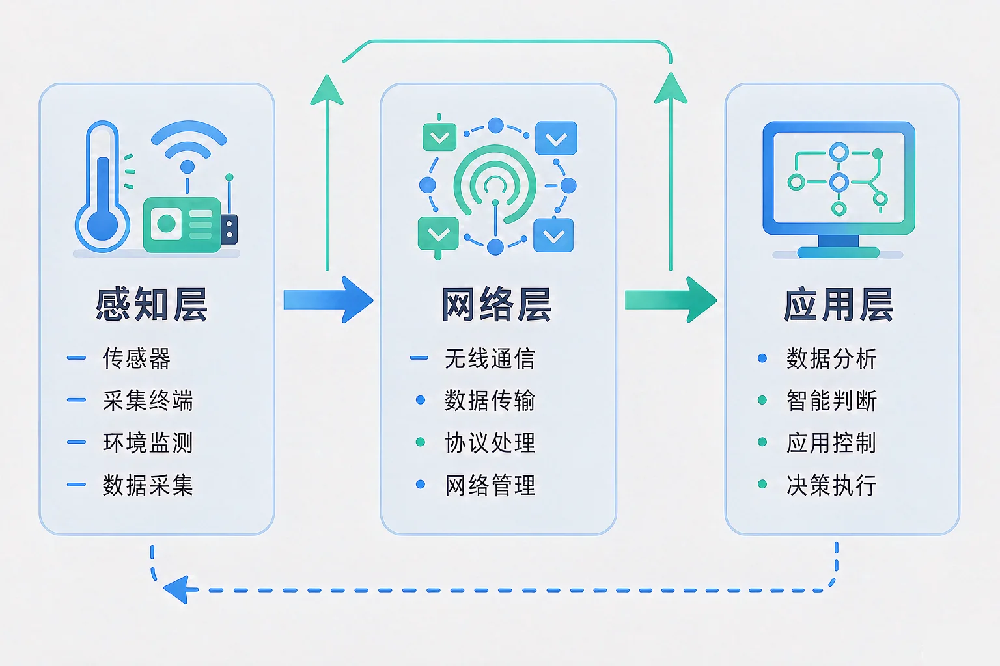
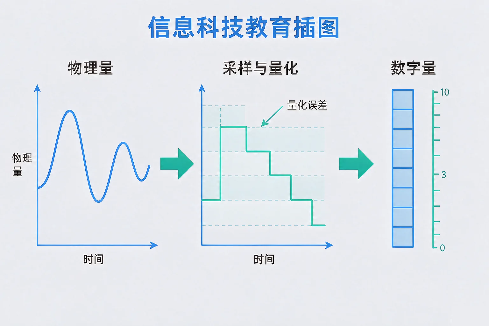
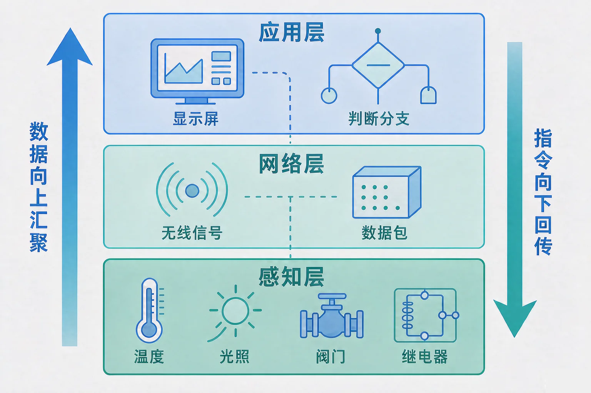

Gallery
v1.0.0 · skill v7.22.0
初中八年级 · 物联网与模块
一间普通的教室，怎样才能自己「知道」屋里闷了、灯还亮着，并且自己做出反应？

选一个你真正好奇的问题，后面的实验都会围着它转。
选择或输入后，这节课会围绕你的问题展开。
先凭直觉选一个，选完立刻看到解释——错了也没关系，正好知道要重点听哪里。
1. 下面哪一件事属于物联网要做的事？
物联网的关键是「物」自己产生数据：传感器采集、网络传输、平台决策。看视频和存文档连接的都是人和信息，属于互联网。错因提醒：把上网和物联网搞混，是这一课最常见的错误。
2. 传感器把 0 ℃ 到 50 ℃ 的温度范围用 8 位来表示，这意味着：
有限位数的数字量只能表示有限个等级，真实值落在两级之间时只能就近取整，这就产生了量化误差。错因提醒：很多同学误认为数字量一定比模拟量更精确，其实精度取决于位数和量程。
3. 一个装在操场角落的土壤湿度采集点，到机房平台大约有 300 米。选择连接方式时最该优先考虑的是：
网络选型看三件事：覆盖距离、带宽、功耗。这个问题先记在心里，等下我们用选型台实际算一算。
为什么要学这一课？你已经知道互联网能把人和信息连起来，也用过各种在线服务。但你有没有想过：教室里的温度、农田里的湿度、仓库里的货物，它们自己不会说话，所以我们需要一套办法，把物理世界的信息变成计算机能处理的数据，再送到平台上去判断和决策——这就是物联网。
物联网是指通过感知设备，按约定的方式把物品与网络连接起来，实现对物品的识别、数据采集与远程控制。它连接的对象是物，互联网连接的对象主要是人。
① 感知
用传感器把温度、光照、气体浓度等物理量变成数字量。
② 传输
用有线或无线的连接方式，把数据从设备送到平台。
③ 处理
平台存储、分析、判断，再决定是否下发控制指令。

🔍 深层理解 换个角度再看一遍这件事，看看能不能说出背后的原理。
看见它：同一间教室，装不装传感器是两回事：不装，屋里闷了只能靠人进去才知道；装了，数据会自己流到平台上。
比较它：互联网连接人和信息，物联网连接物。判断一个系统属不属于物联网，就问一句：数据是「物」自己产生的吗？
迁移它：量化的思路到处都在用：尺子的最小刻度、电子秤的最小读数、音乐采样率，都是用有限的等级去逼近连续的真实值。
选一种传感器，拖动滑块改变环境里的真实物理量，观察「真实值 → 数字量 → 还原读数」三步的变化，再做几次采集。
最近采样记录
三层不是三个盒子，是一条流水线。数据从最底下往上走，控制指令从最上面往下回。链路里任何一层出问题，整条链路都不成立——所以工程上先分层，才能一层一层查。

最容易犯的两个错：一是误认为装了几个传感器就叫物联网——数据送不出去、平台用不上，就只是一堆孤立的测量；二是误认为执行器不属于物联网——只会采集不会动作的系统，永远停在「看见」而没有「做到」，实际项目里执行器和传感器同属感知层。
设备装在哪、每分钟传多少数据，先算清楚。再选一种连接方式，看看它能不能扛住这个任务。
题目：学校要在实验室做一个「有害气体超量后自动通风」的系统。请指出它的感知层、网络层、应用层分别由什么构成，并说明理由。
不少同学误认为「装了气体传感器就是物联网系统」，把三层里的两层都漏掉了：数据没送出去，也没有任何判断和动作。另一处容易搞混的是把执行器算到应用层——开窗的装置是物理动作，属于感知层；决定「什么时候开」才是应用层。分层的依据是「管哪一段」，不是「谁更聪明」。
先凭直觉选一个，选完立刻看到解释——错了也没关系，正好知道要重点听哪里。
1. 下面哪句话是正确的？
三层各有分工：感知层采集与执行，网络层传输，应用层判断与决策。错因提醒：把「装了传感器」等同于「物联网系统」，是最常见的错误——没有网络与应用，传感器只是一堆孤立读数。
2. 某温度传感器的量程是 0 ℃ 到 60 ℃，用 10 位表示。关于它的读数，正确的说法是：
位数决定等级数：10 位是 1024 级，量程 60 ℃ 时每级约 0.06 ℃，误差只会变小、不会消失。错因提醒：容易误认为「换成数字量就没有误差了」，其实量化误差是这个过程固有的代价。
3. 一个采集点离平台 2 公里，每分钟只上报 0.2 KB 数据。选连接方式时，下面哪种判断最站得住脚？
覆盖和功耗是主要矛盾，数据量小说明带宽不是瓶颈。错因提醒：常见错误是只盯着一个指标下结论——要么以为「数据量小就随便选」，要么以为「距离远就一定要最快」。
场景：一间教室的采集终端装在离平台 80 米处，每分钟上报 0.6 KB 数据。请依次选好三层，再运行这条链路。
写下来，说给同桌听：如果应用层要判断的是「气体浓度超量」，而感知层只装了温度传感器，这条链路哪个环节错了？应该改哪一层？
先凭直觉选一个，选完立刻看到解释——错了也没关系，正好知道要重点听哪里。
1. 校园低洼处要做一个积水预警装置：水位超过 30 厘米就发提醒。下列设计里最合理的是：
这是感知、传输、应用三层齐备的方案。错因提醒：第三个选项是典型的「只有感知层」——数据存下来却没人用，系统等于没建成。
2. 图书馆要统计自习座位是否被占用，用红外传感器判断「有人 / 无人」。关于这个数据，正确的说法是：
「有人 / 无人」只有两种状态，是典型的开关量，1 位就够。温度、光照这类可以连续取值的是连续量。错因提醒：容易误认为凡是被传感器采集的都是连续量，其实数据类型由物理量的性质决定。
3. 一个部署在郊外的农田监测点，每天要上报一次数据，靠电池供电。最需要权衡的是：
郊外供电不便，功耗是决定性的约束；每天一次的频率说明带宽压力很小。错因提醒：常见错误是误认为「上报越勤越可靠」，实际上频率越高越费电，超过需要就是浪费。
回到开头那间教室：装上温湿度传感器和人体红外，数据经实验楼内网络送到平台，平台判断「无人且灯还亮着」就下发关闭指令——这间教室自己就能管自己了。整个过程里没有任何一步是神秘的，每一层都在做很清楚的一件事。
给别人讲一遍：请用「感知层、网络层、应用层」这三个词，说清楚一条完整的物联网链路是怎么跑起来的。
三层练习，做完第一、二层就算通关；第三层留给愿意继续探索的同学。
⭐ 基础巩固（必做）
⭐⭐ 能力应用（必做）
⭐⭐⭐ 迁移挑战（选做）
左边是学它之前要先会的，右边是学会之后可以继续探索的，下面是同一领域的伙伴知识。
图谱正在加载：首次进入需下载知识索引（约 1–3 秒），加载完成后本行会自动消失。